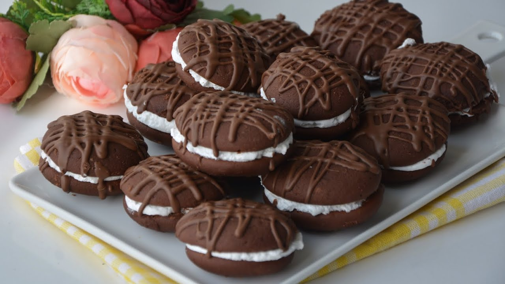

Sandviç Kek

Kaç tane yediğinizi sayamayacağınız büyük küçük herkesin çok beğeneceği bir tarif bırakıyorum sizlere.
Kaç Kişilik:10 - 12 Kişilik
Hazırlama Süresi:20 Dakika
Pişirme Süresi:25 Dakika
Sandviç Kek Nasıl Yapılır ?
- Keki için oda ısısında yumuşamış olan tereyağ ya da margarini,toz şekeri ve yumurtayı mikserle iyice çırpıyoruz.
- Ardından sütü ekleyip tekrar çırpıyoruz.
- En son unu,kakaoyu,kabartma tozu ve vanilyayı da ekleyip karıştırdıktan sonra kek harcını sıkma torbasına alıyoruz.
- Yağlı kağıt serdiğimiz fırın tepsisine aralıklı olacak şekilde kek harcından sıkalım.
- Önceden ısıttığımız 170 derece fırında yaklaşık 8 dakika kadar pişirelim.
- Bir poşet krem şantiyi bir çay bardağı soğuk sütle çırpıp sıkma torbasına alalım.
- Fırından aldığımız kekler soğuyunca birini alıp üzerine krem şanti sıkalım ve diğer bir keki de üzerine kapatıp sandviç şekli verelim.
- Bütün kek harcı bitene kadar aynı işlemlere devam edelim.
- En son benmari usulu eritilmiş bir paket sütlü çikolatayı keklerimizin üzerine sıkalım.
Afiyet olsun
Diğer Tariflere Göz At